初期設定
お申し込みから、ご利用開始までの流れです。
Instagram・Googleビジネスプロフィールを、ひとつの管理画面で運用するための手引きです。
担当者様にご確認ください。
利用ガイド ／ 初期設定
お申し込み後、弊社で管理画面をご用意します。そのあと、お客様と弊社で各サービスの連携を進めます。
必要事項を入力して送信してください。
申し込みフォームを開く ›
お申し込み内容を確認し、管理画面を作成してログイン情報をお送りします。
Googleビジネスプロフィールに、弊社をオーナーとして招待してください。招待すると、弊社が自動でオーナーとして追加されます。
手順を見る ›
管理画面の「ロケーション設定」から、弊社がGoogle連携を行います。弊社のGoogleアカウントで連携する必要があるため、お客様は「Google連携」のボタンを押さないでください。
事前に、Instagramがプロアカウントになっているかをご確認ください。そのうえで管理画面からログインします。Instagramのログイン情報をご存じの方であれば、どなたが行っても大丈夫です。
手順を見る ›
Facebookと連携しなくても導入はできますが、連携するといいね・保存・閲覧数などの数値が見られるようになります。InstagramアプリからFacebookページと連携してください。事前にInstagramとFacebookページを連携済みの場合は不要です。
手順を見る ›
連携しておくと、Instagramの動画投稿がTikTokにも自動で投稿されます。より多くの媒体に発信できるので、ぜひ連携してください。
手順を見る ›
導入後、自動で連携されます。お客様の操作は必要ありません。
以上で準備は完了です。以降は管理画面での操作を開始いただけます。
利用ガイド ／ 初期設定 ／ Googleのオーナー権限を付与する
Googleビジネスプロフィールに、弊社をオーナーとして招待していただく手順です。
ご安心ください。弊社に権限を付与しても、メインのオーナーが切り替わったり、これまでの操作や権限が変わったりすることはありません。メインのオーナーは、引き続きお客様のアカウントです。
はじめに：店舗のオーナー権限を持つGoogleアカウントでログインしてください。どのアカウントか分からない場合は、こちらをご覧ください。
Googleの画面右上の「︙︙︙」（Googleアプリ）を押し、「ビジネス」を選びます。
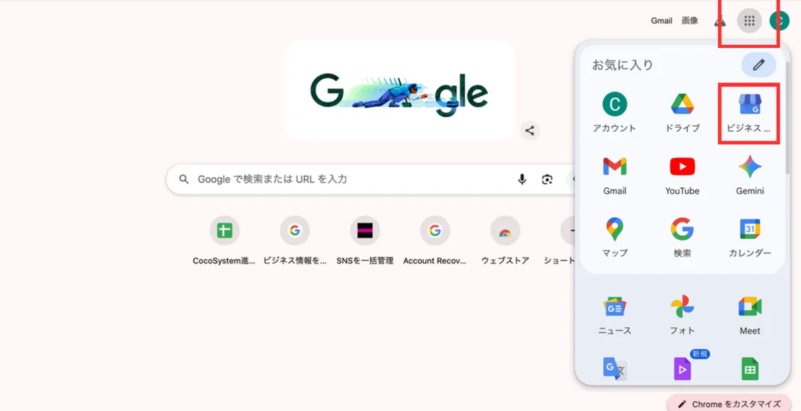
一覧から対象のお店を選ぶと、Googleの店舗ページが開きます。
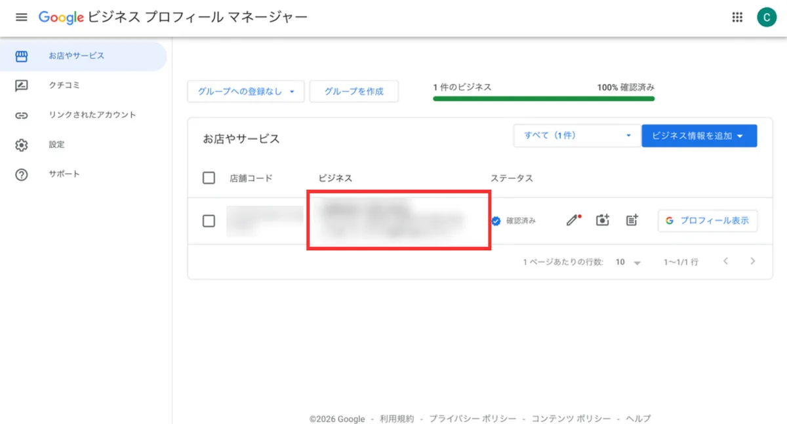
「プロファイルの強度」の横にある「︙」を押し、「ビジネス プロフィールの設定」を選びます。
オーナー権限のあるアカウントでログインしていれば、Googleで店名を検索しても同じ画面が出ます。手順1・2は飛ばして構いません。
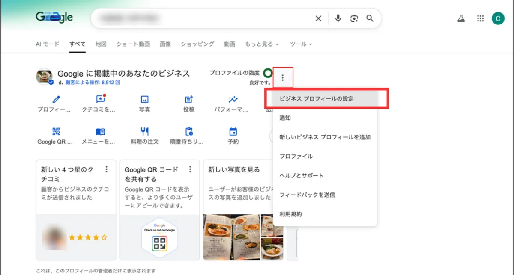
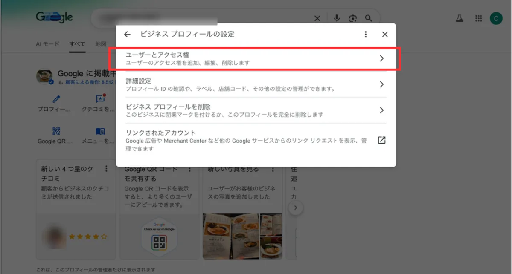
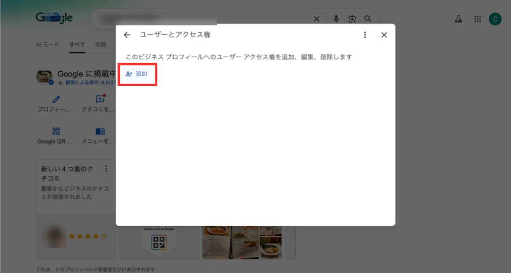
メールアドレスの欄に、次のコードを入力します。アクセスは「オーナー」を選び、「招待する」を押してください。
コードで追加できない場合は、代わりに次のメールアドレスを入力してください。
「管理者」ではなく、必ず「オーナー」を選んでください。招待すると、弊社に招待メールが届きます。
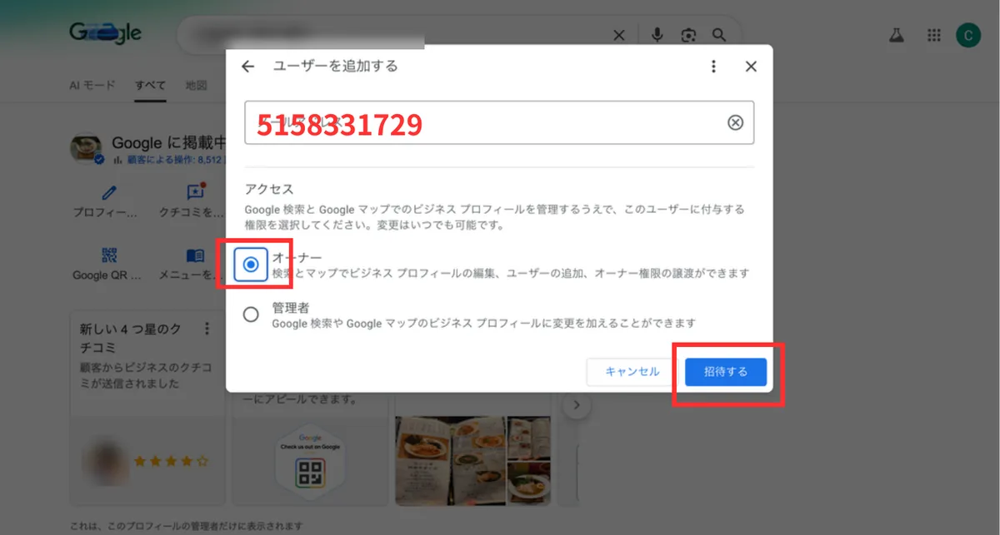
以上で完了です。招待すると、弊社が自動でオーナーとして追加されます。このあと、弊社のアカウントでGoogle連携を行います。ご不明な点は、担当者様にご確認ください。
Googleで店名を検索して、どのアカウントが管理しているかを確認します。
Googleで会社名や店名を検索し、右側に出るお店の情報の中から押します。
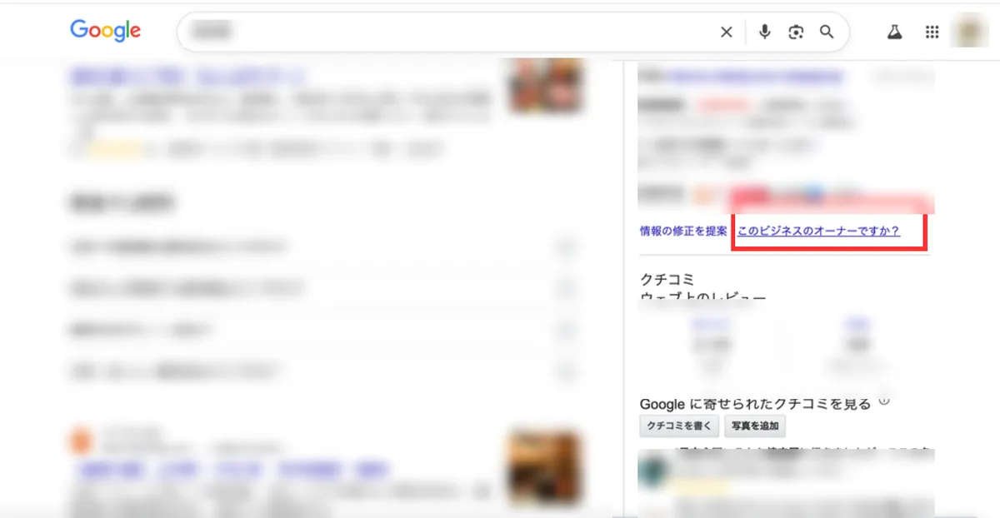
いま管理しているGoogleアカウントのメールアドレスが、一部だけ表示されます。心当たりがあれば、そのアカウントでログインし直して上の手順に進んでください。
心当たりがない場合は、「アクセス権限をリクエスト」を押します。
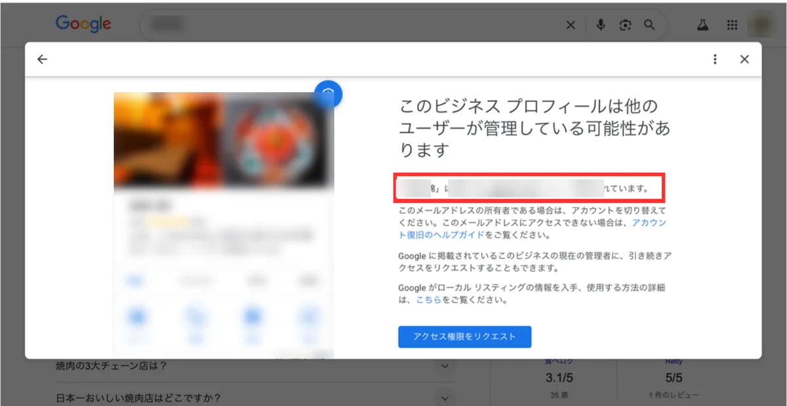
アクセスレベルは必ず「オーナー権限」を選んでください。関係・担当者名・電話番号はお客様の情報を入力し、「送信」を押します。
いまの管理者から反応がなければ、3日ほどでリクエストしたアカウントにアクセス権が付与されます。
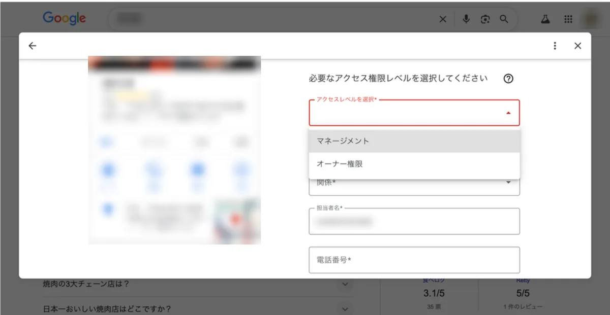
利用ガイド ／ 初期設定 ／ Instagram・TikTokを連携する
管理画面の「ロケーション設定」から、InstagramとTikTokを連携します。Instagramのログイン情報をご存じの方であれば、お客様・担当者様どちらが行っても大丈夫です。
Facebookと連携していないと、投稿の数値が見られません。いいね・保存・閲覧数などのインサイトは、Facebookとの連携が必要です。あとから連携することもできますが、その場合は管理画面でもう一度ログインし直す必要があります。詳しく見る
管理画面の左メニューから「ロケーション設定」を押すと、連携情報の画面が開きます。
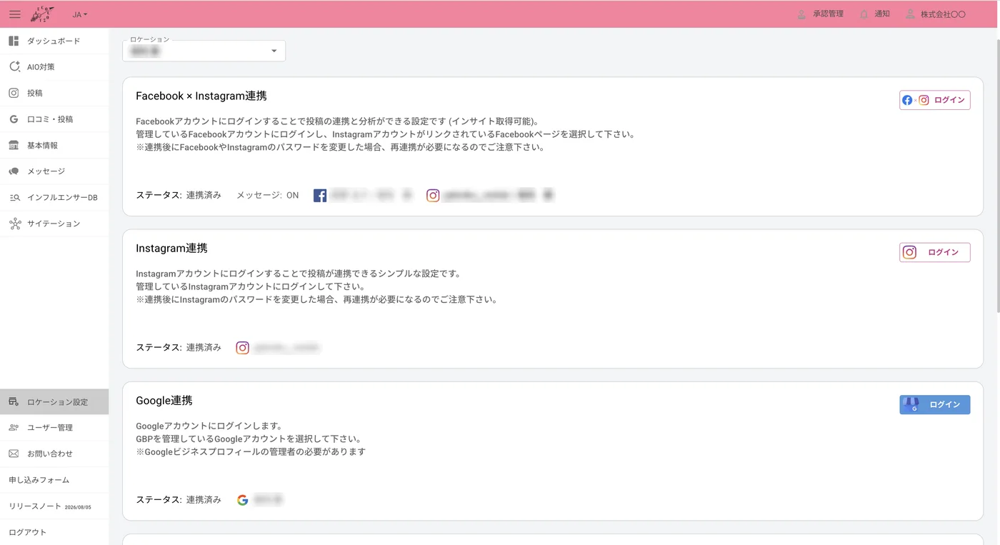
Instagramのログイン画面が開くので、連携するアカウントでログインします。
連携が完了すると、ステータスが「連携済み」になり、アカウント名が表示されます。Facebook × Instagram連携も「連携済み」になっていれば、すべて完了です。
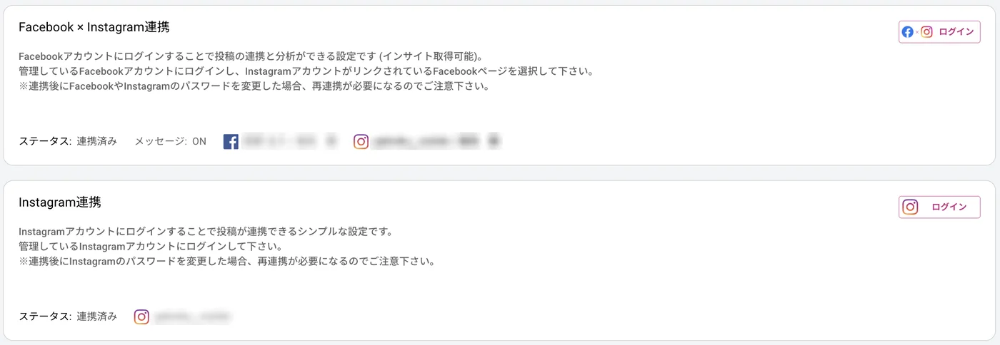
Facebook × Instagram連携が「未連携」のままの場合は、Instagram上でFacebookページとの連携ができていない可能性があります。連携したあと、もう一度ログインしてください。
Instagramアプリから行います。Facebookと連携しなくても導入はできますが、連携するといいね・保存・閲覧数などの数値が見られるようになります。すでに連携済みの場合は不要です。
「ビジネス公開情報」または「プロフィール情報」の中にあります。
すでにFacebookページがある場合は「リンク」、まだない場合は「作成」を選びます。
管理画面でInstagram連携をすでに済ませている場合：Facebookと連携したあと、「ロケーション設定」でInstagramにもう一度ログインしてください。Facebook × Instagram連携が「連携済み」になります。
連携しておくと、Instagramの動画投稿がTikTokにも自動で投稿されます。より多くの媒体に発信できるので、ぜひ連携してください。
連携情報の画面を下にスクロールし、TikTok連携の「ログイン」から、TikTokアカウントでログインします。ステータスが「連携済み」になれば完了です。
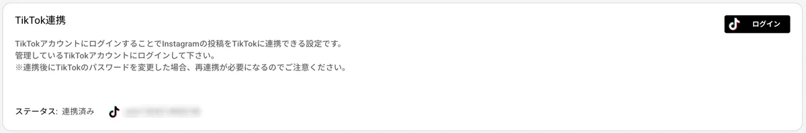
導入後、自動で連携されます。お客様の操作は必要ありません。「連携済み」と表示されていれば問題ありません。
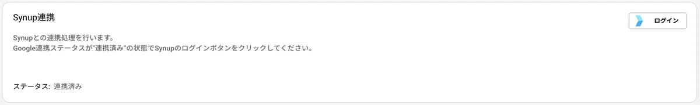
管理画面の「投稿」の一覧で、赤枠の数値（ハートのマークから右）が表示されません。いいね数・コメント数・保存数・合計・閲覧数・リーチ数は、Facebookとの連携で取得しているためです。
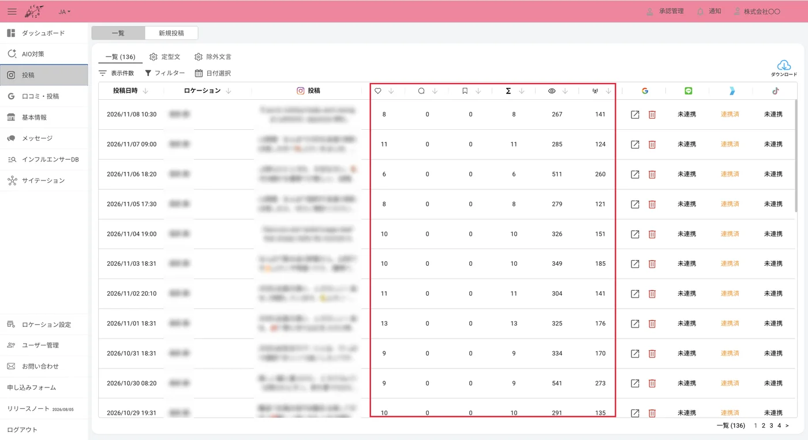
表示されないときは：Instagram上でFacebookページと連携してから、「ロケーション設定」でInstagramにもう一度ログインしてください。ご不明な点は、担当者様にご確認ください。
利用ガイド ／ 管理画面
管理画面は、上のヘッダーと左のメニューで操作します。左のメニューを押すと、右側に各画面が表示されます。
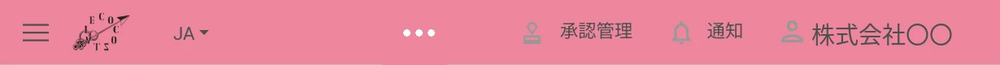
Instagramに投稿した記事の一覧です。記事ごとの反応（いいね・閲覧数など）と、GoogleやTikTokに自動で連携されたかを確認できます。
投稿の基本：Instagramで投稿すると、その内容がGoogleビジネスプロフィールの「最新情報」やTikTokにも自動で投稿されます（連携している場合）。管理画面の「新規投稿」から投稿することもできます。
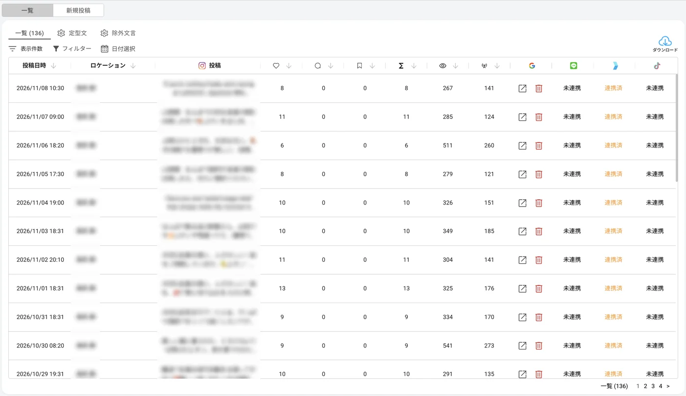
画像は横にスクロールできます
Facebookと連携していないと表示されません。詳しく見る
| マーク | 項目 | 意味 |
|---|---|---|
| ♡ | いいね | いいねされた数 |
| ○ | コメント | コメントされた数 |
| ⌑ | 保存 | 保存（お気に入り）された数 |
| Σ | 合計（エンゲージメント） | いいね・コメント・保存などの反応の合計 |
| ◉ | 閲覧 | 投稿が見られた回数。同じ人が何度見ても数えます |
| ((·)) | リーチ | 投稿を見た人の数。同じ人は1人として数えます |
管理画面からInstagramに投稿できます。投稿する店舗を選び、写真と文章を入れて投稿します。
Googleの列に「連携エラー」と出たら、マウスを合わせると理由が表示されます。よくある理由は次のとおりです。
| 表示される英文（一部） | 理由と対処 |
|---|---|
| not authorized for this location | この店舗の業種カテゴリでは、Googleに投稿できない場合があります。担当者様にご確認ください。 |
| Image bytes too small | 写真のサイズが小さすぎます。もう少し大きい写真で投稿してください。 |
| Image format is not supported | 写真の形式に対応していません。jpg・png・gifの写真で投稿してください。 |
| Requested entity was not found | Googleの店舗情報が見つかりません。担当者様にご確認ください。 |
音楽付きのリールについて：著作権のある音楽を使った投稿は、Googleに連携できないことがあります。
Googleに届いた口コミを確認して返信する画面です。上部の「投稿」タブからは、Googleだけに投稿することもできます。
口コミへの返信は48時間以内に。Googleでは、口コミが届いてから48時間以内に返信することが推奨されています。「未返信」をこまめに確認して、早めに返信しましょう。
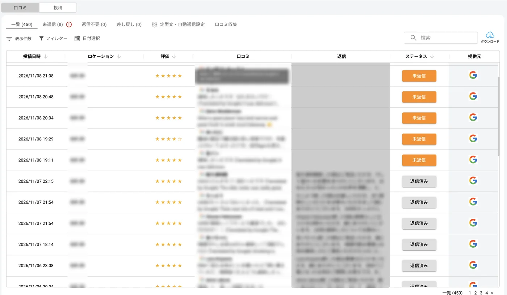
画像は横にスクロールできます
| ステータス | 意味 |
|---|---|
| 未返信 | まだ返信していない口コミです。押すと返信できます。 |
| 返信済み | 返信が完了しています。押すと返信を直せます。 |
| 自動返信 | 自動返信の設定で返信した口コミです。 |
| 返信不要 | 返信しないことにした口コミです。「返信不要解除」で未返信に戻せます。 |
| 承認申請中・差し戻し | 承認の設定をしている場合の状態です。承認待ち、または承認者から差し戻された返信です。 |
| 削除済み | 口コミが削除されています。返信はできません。 |
一覧の「未返信」ボタンを押すと、返信画面が開きます。自分で書くことも、AIや定型文で作ることもできます。
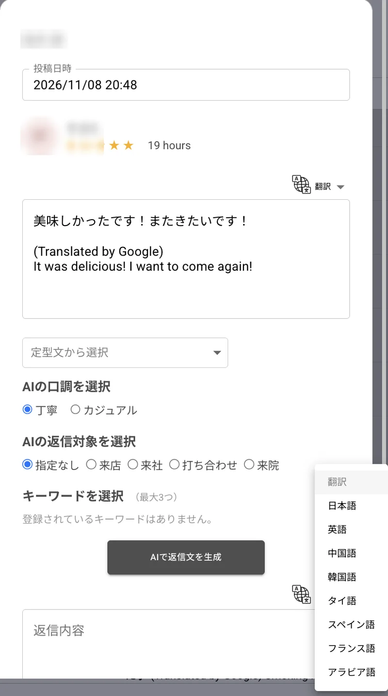
AIの返信文は必ず確認を。お店の状況に合っているかを見てから返信してください。
48時間以内に返信するのが難しいときのための設定です。自動返信の文章をあらかじめ登録しておくと、決めた時間内に返信できなかった口コミに、自動で返信されます。
できるだけ、ひとつずつ返信してください。自動返信はどの口コミにも同じ定型文が入るため、お客様に機械的な印象を与えてしまいます。普段は手動かAIで返信し、自動返信は「どうしても返信できなかったとき」の備えとして使ってください。
「定型文・自動返信設定」を開くと、3つの設定があります。
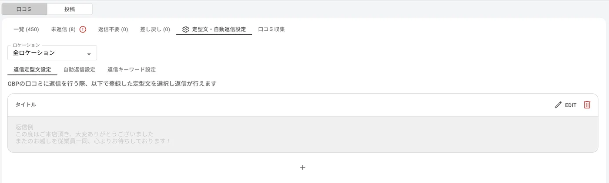
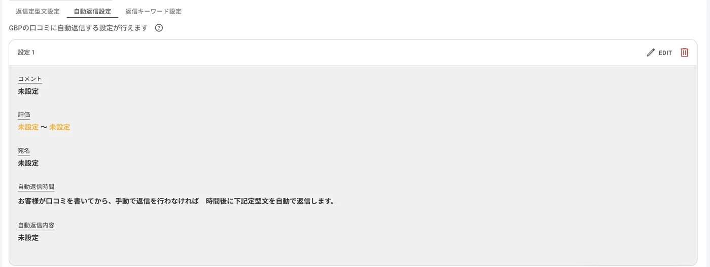
| 自動返信の項目 | 設定する内容 |
|---|---|
| コメント | 星だけの口コミ、星とコメントがある口コミ、すべて、のどれに返信するか |
| 評価 | 星いくつからいくつまでの口コミに返信するか |
| 宛名 | 返信に、口コミを書いた人の名前を入れるかどうか |
| 自動返信時間 | 口コミが届いてから何時間、手動で返信がなければ自動返信するか |
| 自動返信内容 | どの定型文で返信するか |
お客様に口コミを書いてもらうための専用ページ（クッションページ）を作ります。QRコードを店内に置いたり、URLをLINEやSMSで送ったりして使います。
管理画面（設定）
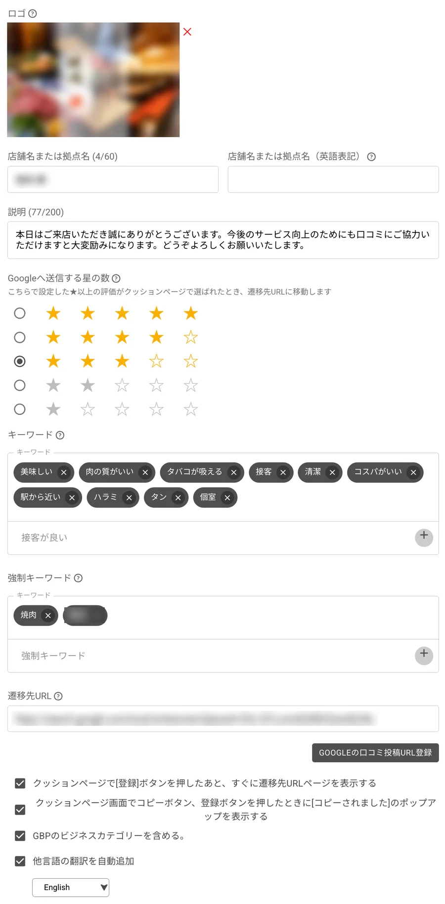
お客様が見る画面（プレビュー）
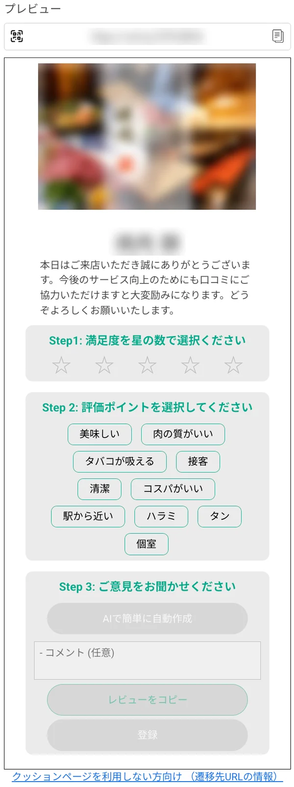
Googleの画面では、お客様がもう一度星を選び、コピーした文面を貼り付けて投稿します。
「Googleへ送信する星の数」で、Googleの口コミ画面へ案内する星の数を決められます。
例：星の数を「★4」に設定した場合
専用ページを通さず、直接Googleに書き込んだ口コミは防げません。この機能で絞り込めるのは、QRコード・URLから専用ページを開いたお客様だけです。
口コミ用のページは、お客様のスマートフォンの言語に合わせて自動で表示が切り替わります。
ダッシュボードでは、次の2つの数字を確認できます。
番号を押すと、下の説明に移動します。
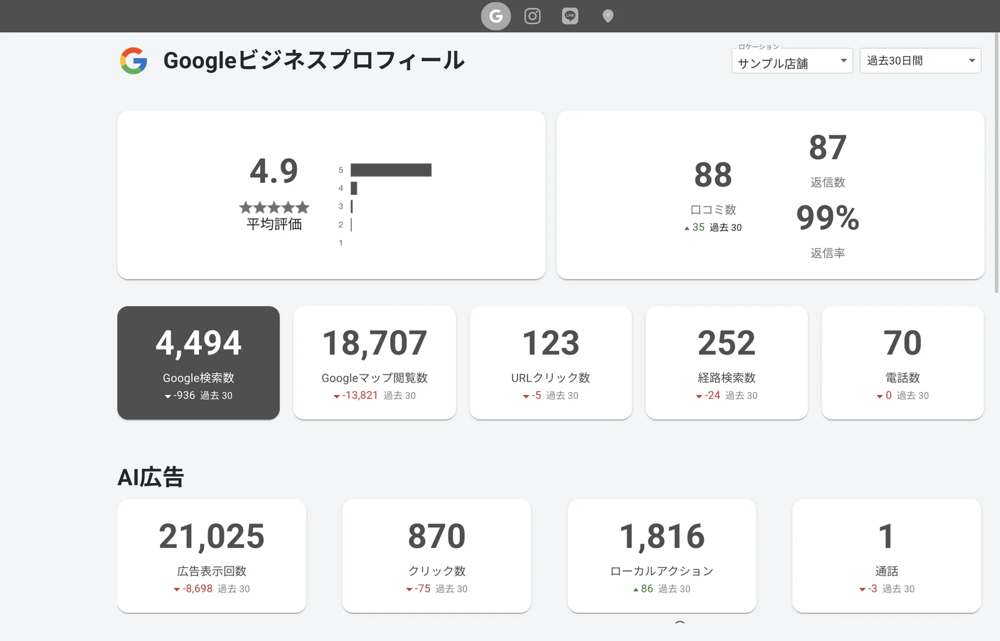
画像は横にスクロールできます
Google・Instagram・MEO順位計測を切り替えます。
表示する店舗と期間を選びます。
Googleの口コミの平均点です。
届いた口コミの件数と、返信した割合です。
Google検索でお店が表示された回数です。
Googleマップでお店が表示された回数です。
ホームページなどへ移動した回数です。
お店までのルートが調べられた回数です。
電話ボタンが押された回数です。
数字の下の「▲35 過去30」は、前の同じ期間との差です。Googleの数字は反映まで1週間ほどかかります。
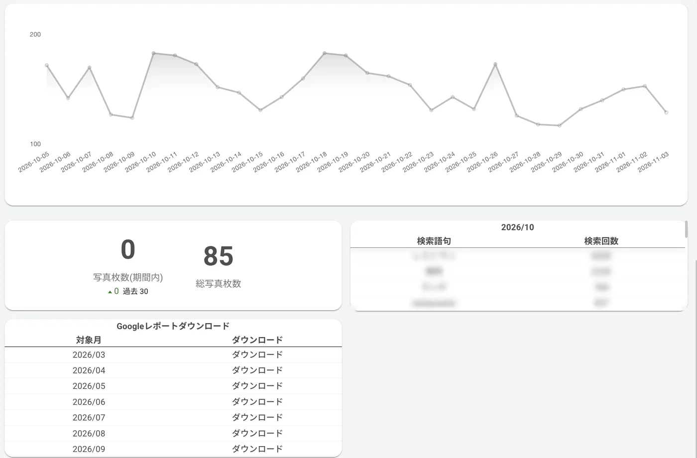
画像は横にスクロールできます
AI広告をご契約のお店に表示されます。
一般的な広告
表示回数・クリック数まで
CocoSystemのAI広告
クリック後の行動（ルート検索・電話・メニュー閲覧など）と来店まで
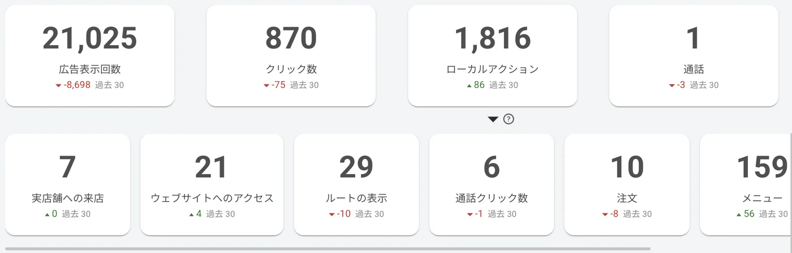
画像は横にスクロールできます
ローカルアクションがクリック数より多いのはなぜ？1人が広告をクリックしたあと、ルート検索・メニュー閲覧・ウェブサイトへのアクセスなど複数の行動をすると、それぞれ1回ずつ数えるためです。
| 項目 | 意味 |
|---|---|
| 実店舗への来店 | 広告を押した、または見たあとに、お店に来たと推定される人数です。Googleのデータをもとにした、最低限これだけは来店したという組数です。 |
| ルートの表示 | 広告からGoogleマップで、お店までのルートが調べられた回数です。 |
| 通話クリック数 | 広告の電話ボタンが押された回数です。 |
| メニュー | 広告から、Googleに載せているメニューを見た人の数です。 |
| 注文 | 広告から、Googleに連携している注文・予約が行われた回数です。 |
| ウェブサイトへのアクセス | 広告から、お店のホームページを見に来た人の数です。 |
| その他のアクション | お店の情報の保存や共有など、上記以外の行動の回数です。 |
「通話」の数には、ホームページなど広告以外から入った電話は含まれません。